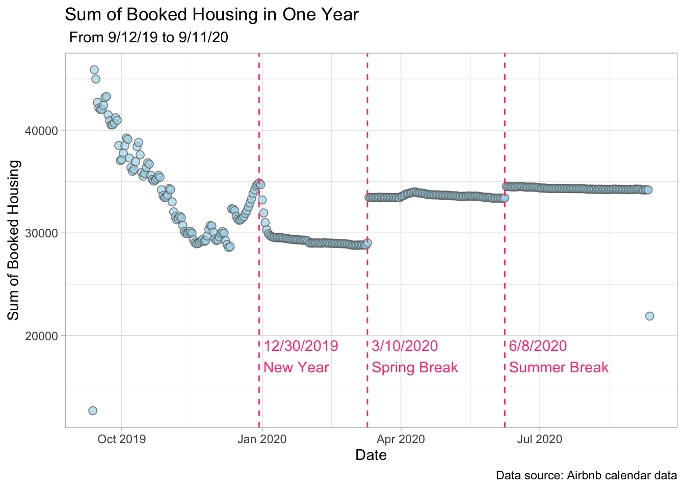
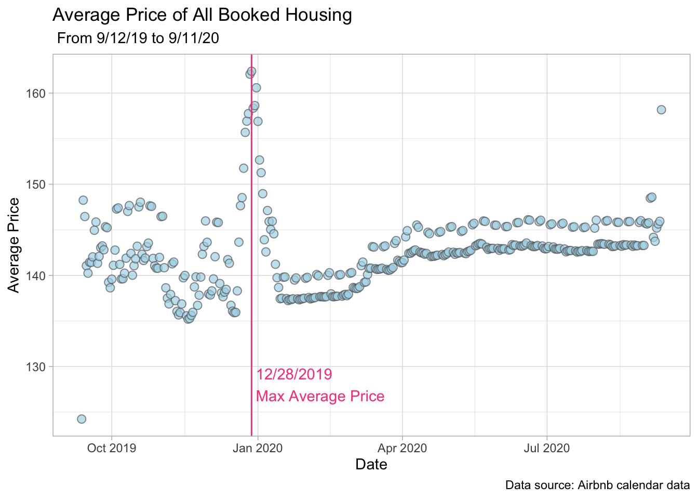
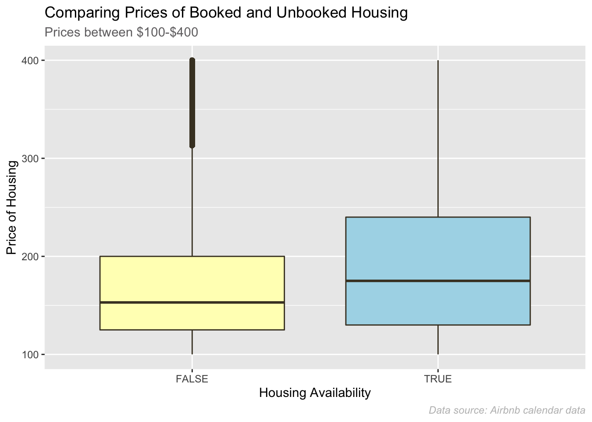
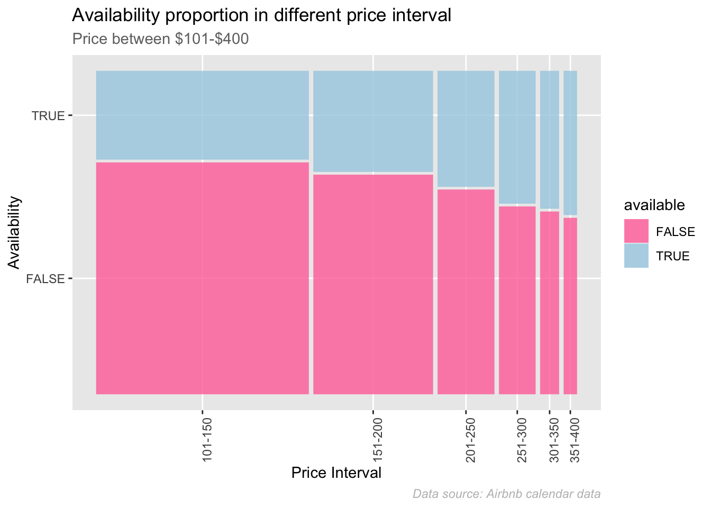
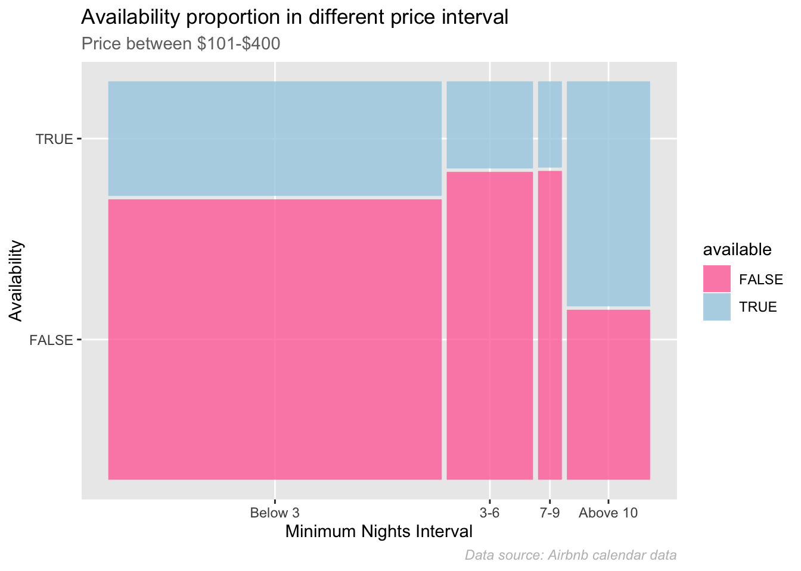
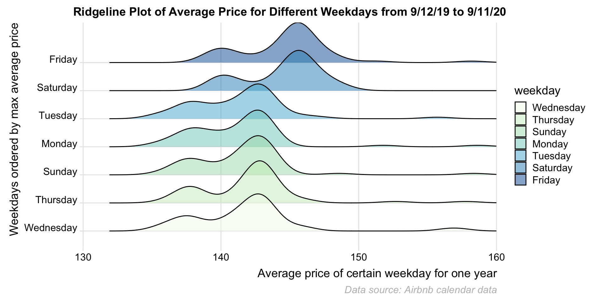

Chapter 5 Analysis of Calendar Data
5.1 Analysis of Seasonality and Time Effect
We want to analyze the seasonality of Airbnb housing prices using the calendar dataset. The variable available denotes the availability of every Airbnb listing in New York area from 9/12/2019 to 9/11/2020. Since customers always have general judgement about the overall quality of the housing, those booked listings can be perceived as being more likely to be fairly priced and reflect the price condition of rental market in New York area. When we want to book a house, we usually search through most of possible listings to find the optimal choice. So analyzing booked housing can better help us to make decision.
5.1.1 Time effect on demand

This time series plot analyzed the sum of booked housing from 9/12/19 to 9/11/20. Using the time seires plot, we can see two outliers on 9/12/2019 and 9/11/20 which are the first and last days of our data. The existence of these could be due to data collecting issues and we can reasonably ignore these two data points in our analysis below. Although the booked housing quantity is not equivalent to the actual checkin amount and many people prefer to book housing within one month of departure, we can still analyze the sum of booked housing data as there already exists some clear pattern in the plot.
Starting from 9/13/19 when the sum of booked housing reaches its peak, the amount of booked housing gradually decreases until mid November. This happens because the rental condition on 9/13/19 is closest to the actual check-in amount. As time get further away from today, there will be more potential customers who may plan but have not yet booked an Airbnb right now. Given the stable level of housing demand on October, the downward trend looks reasonable.
After mid November, the amount of rental gradually increases and reaches its local peak on 12/30/19. Then, the amount sharply declines. This transition can be safely interpreted by the advent of New Year’s day. The sum of rental remains stable afterwards but there is an immediate rise on 3/10/20, which is exactly the starting time of spring break. Another immediate rise happens on 6/8/20 which is the start of summer vacation. Apparently, the demand of housing is strongly related with long holidays. Those holidays largely increase the demand of Airbnb housing in New York area, which partly reflect the popularity of New York area as a traveling place. Also, leasing contracts of at least 3 months may contribute to the stability of rented housing as the lines are almost horizontal for each time interval between dashed lines.
Overall, the advent of long holidays can largely increase the demand of housing. Because of the limitation of total amount of Airbnb listing in New York, the higher amount of booked housing means the lower availability of high quality houses. Theoretically, the higher demand leads to the higher price. So we can further analyze the price in a year to confirm our conclusion.
5.1.2 Time effect on price

The time series plot above shows the variability of price in a change. Same as above, we do not analyze two outliers because of data collection issues. First, we can find a huge increment in average price at the end of the year. The price starts to increase from the middle of Decmember and reaches its maximum on 12/28/2019. After New Year’s Day, the price turns back to normal level. Since the demand of housing is positively related to its price, such increase in price reflects the steep rise in housing demand. It can be attributed to the start of winter break and the popularity of traveling to New York for celebrating New Year’s Day. Also, there is a price drift around the middle of March. It corresponds to the beginning of spring break and the popularity of New York city as the traveling destination at that time. The average price of listing vibrates a lot from October to December. We can observe that the price reaches its minimum on 11/18/19. The price remains stable and comparatively low from mid January to mid March. The price is also stable but slightly higher after April. So based on this plot, all of the observations are consistent to the demand change analyzed before. According to the price data, we find that The most expensive timing is from mid December to mid January. On the other hand, the most economical timing for booking Airbnb housing is November, January and Februray which are most suitable time to travel to New York if we want to minimize the rental expense.
5.2 Booked Housing VS. Available Listing
5.2.1 Mean price comparison

Because of the family budget constraint, we only looked at the housings with price larger than 100 dollars and lower than 400 dollars. From the boxplot above, the booked properties have lower mean price than unbooked ones. The interquartile range for booked housings are largely smaller than that of availble housings. The boxplot gives us an overview about the relationship between availability and price. We still need to analyze further in detail.
5.2.2 Proportion Comparison with Binned Price

We bin the price to six levels: $101-$150, $151-$200, $201-$250, $251-$300, $301-$350, $351-$400. It helps us better visualize availability proportion for different quality levels of properties. We can see that as price goes up, the proportion of booked properties gets gradually smaller. The price interval $101-$150 has highest proportion of booked housing which is around 75% while the price interval $351-$400 has lowest proportion which is around 50%. Also, about 40% of housing are priced between $101-$150 and about 80% of housing are priced between $101-$300. As price gets higher, the count of housing gets smaller and smaller. So if we want to lower the rental cost, we need to book the housing as early as possible because cheaper housings are always first to be booked and the available listings are generally more expensive. Even though we want to find a good housing with price between $301-$400, it would be much better to plan ahead as there are much samller number of listings and over half of total properties in this price interval have already been booked.
5.2.3 Minimum night

We also take a deeper look at the relationship between binned minimum night and availability of Airbnb housing. We created four levels of minimum nights: “Below 3”, “3-6”, “7-9”, “Above 10”. About 60% of housings have minimum nights below 3. It makes sense as Airbnb mainly provides short term rental. For these housings, about 75% has already been booked. Around 20% of housings have minimum nights between 3 to 6. The count of housings with minimum nights between 7 to 9 is lowest among all levels. The proportion of availability for these two types are similar and lowest among all levels. Surprisingly to us, around 20% of housings have minimum nights above 10 days. The proportion of booking rate of this type, which is smaller than 50%, is lowest among all four levels.
5.3 Average Price Comparison based on Weekdays

The ridgeline plot above shows the average price distribution for different weekdays from 9/12/19 to 9/11/20. The y axis is ordered by the average price of peaks on each weekday. The graph clearly shows that the average price distributions are quite similar for all of weekdays. Also, from Sunday to Thursday, all of their average price density curves have peaks on the similar average price while there exhibits an obvious right shift of curves on Friday and Saturday. This pattern can be explained by the lodging demands when people from other cities travel to New York on weekends. The higher on Friday but not on Sunday may be explained by visitors’ preference to arrive in New York on Friday night. They can not live in New York on Sunday as they may work or take classes on Monday.